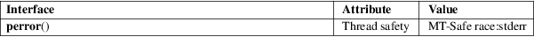

perror − print a system error message
Standard C library (libc, −lc)
#include <stdio.h>
void perror(const char *s);
#include <errno.h>
int errno; /* Not really declared this way; see errno(3) */
[[deprecated]]
const char *const sys_errlist[];
[[deprecated]] int sys_nerr;
Feature Test Macro Requirements for glibc (see feature_test_macros(7)):
sys_errlist,
sys_nerr:
From glibc 2.19 to glibc 2.31:
_DEFAULT_SOURCE
glibc 2.19 and earlier:
_BSD_SOURCE
The perror() function produces a message on standard error describing the last error encountered during a call to a system or library function.
First (if s is not NULL and *s is not a null byte ('\0')), the argument string s is printed, followed by a colon and a blank. Then an error message corresponding to the current value of errno and a new-line.
To be of most use, the argument string should include the name of the function that incurred the error.
The global error list sys_errlist[], which can be indexed by errno, can be used to obtain the error message without the newline. The largest message number provided in the table is sys_nerr−1. Be careful when directly accessing this list, because new error values may not have been added to sys_errlist[]. The use of sys_errlist[] is nowadays deprecated; use strerror(3) instead.
When a system call fails, it usually returns −1 and sets the variable errno to a value describing what went wrong. (These values can be found in <errno.h>.) Many library functions do likewise. The function perror() serves to translate this error code into human-readable form. Note that errno is undefined after a successful system call or library function call: this call may well change this variable, even though it succeeds, for example because it internally used some other library function that failed. Thus, if a failing call is not immediately followed by a call to perror(), the value of errno should be saved.
For an explanation of the terms used in this section, see attributes(7).

|
errno |
perror()
C11, POSIX.1-2008.
sys_nerr
sys_errlist
BSD.
|
errno |
perror()
POSIX.1-2001, C89, 4.3BSD.
sys_nerr
sys_errlist
Removed in glibc 2.32.
err(3), errno(3), error(3), strerror(3)